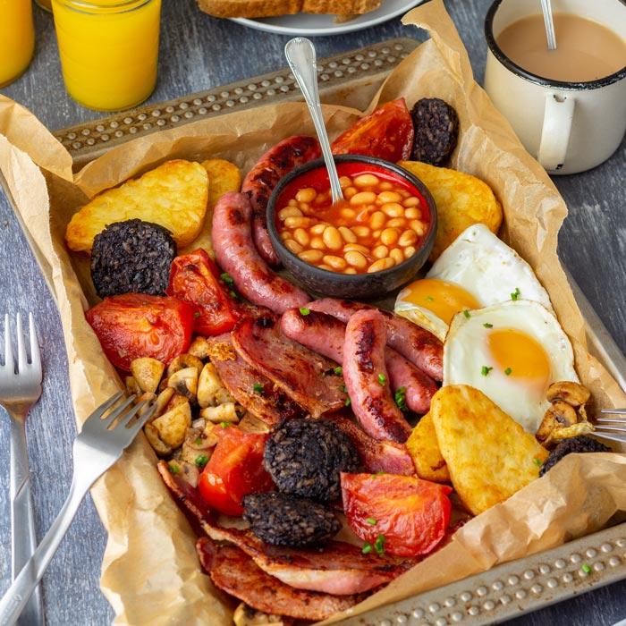

Irish breakfast is a traditional meal consisting of fried eggs, vegetables, potatoes, and meats such as bacon, etc. The large meal is almost always served with Irish soda, a cup of tea, and a glass of orange juice on the side. All of the ingredients are most commonly fried in creamy butter. Originally, the breakfast was invented as a way to prepare the people for a day of hard work on the farm, and the meal was especially popular on cold winter mornings.
Meal prep time : 25 minutes
Servings : 2